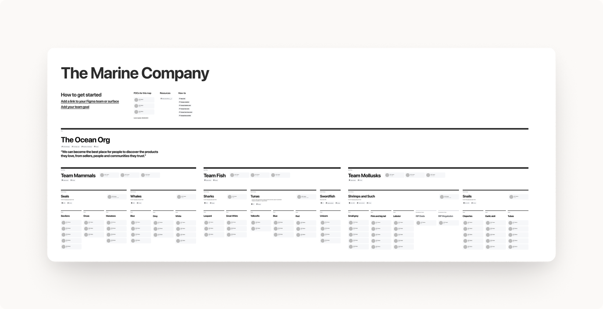
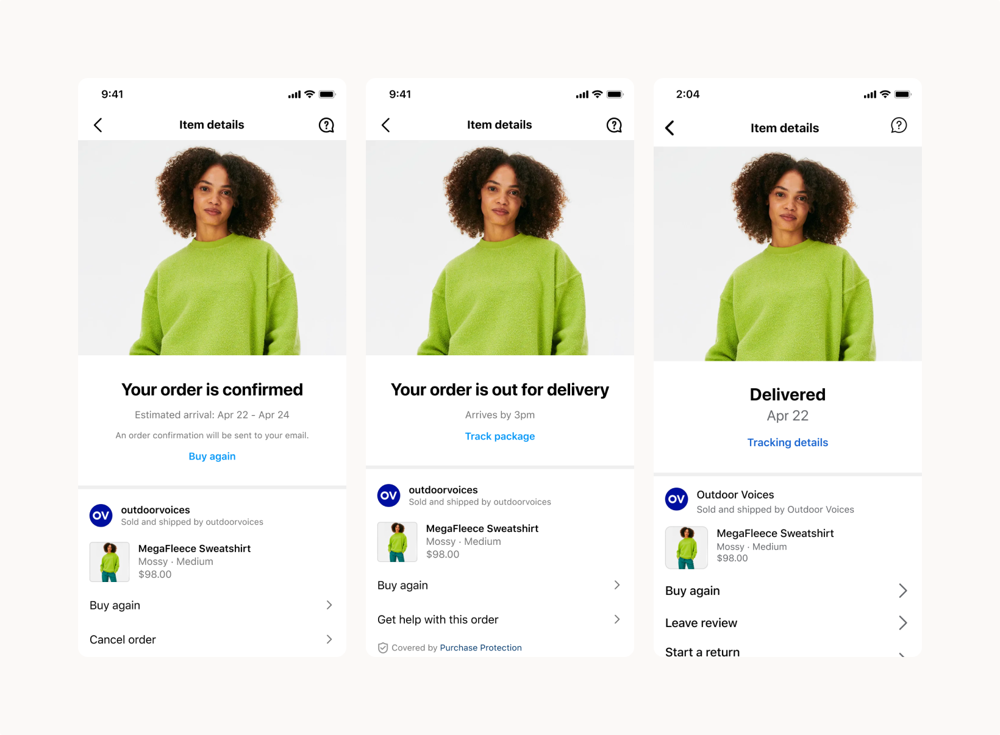

At Meta, I helped my team work better and faster by creating central resources: the Post-Purchase team’s source of truth, a comprehensive product system and resources that improved team efficiency.

Too much of our time was spent tracking down the product owners and latest designs for different surfaces across our team. To solve this, I created a live, interactive directory of people, teams and surface owners.

I also put together the Post-Purchase team’s central source of truth for product states and flows, and a comprehensive component system open to the entire org, which let us work faster while keeping our designs consistent and up to date.
Our ad-hoc, cross-functional team came together for a hackathon to design and prototype an internal tool that let us easily create and manage realistic test orders, and move through order states and progress seamlessly.
It saved the team time, set shared processes, and gave the org one place to find people, flows and libraries.